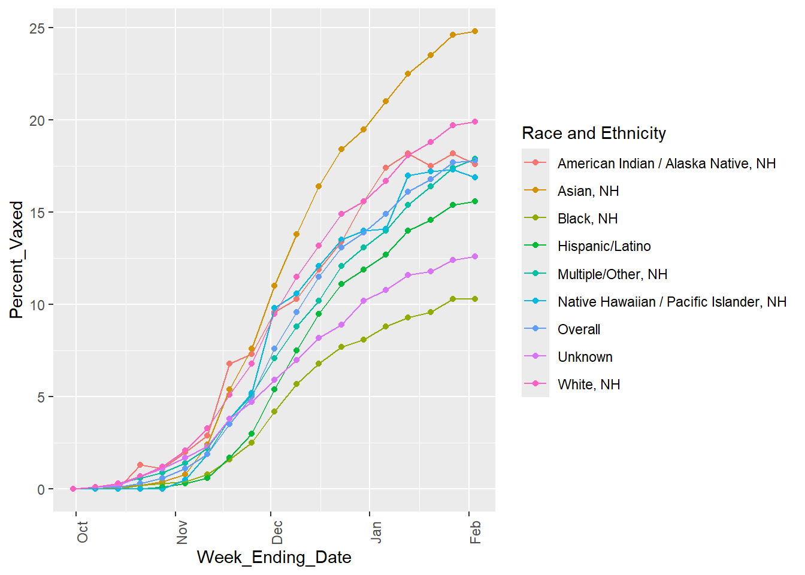
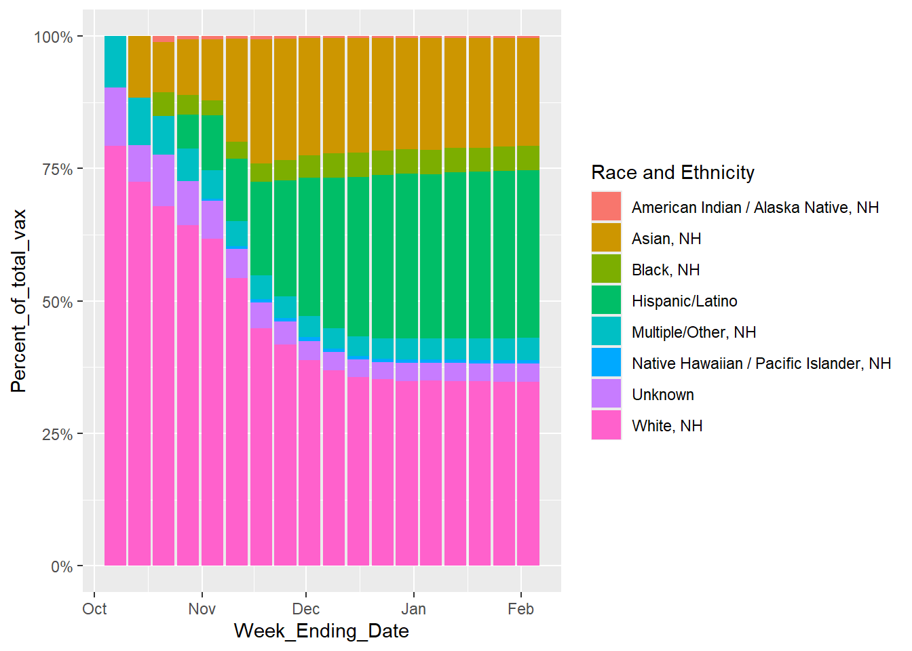
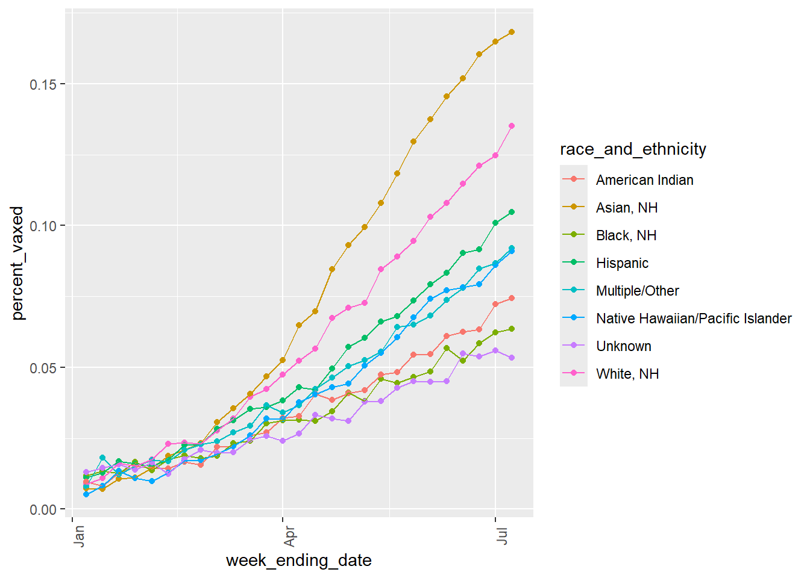
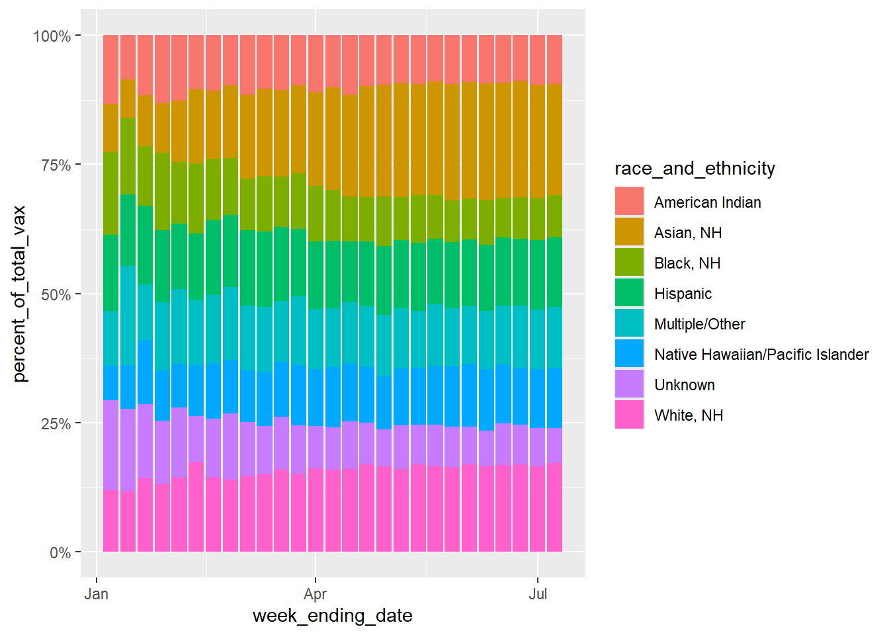

The data for this exercise is the Weekly Respiratory Syncytial Virus (RSV) Vaccination Coverage among Pregnant Women by Race and Ethnicity age 18-49 in 2023-2024, gathered by National Center for Immunization and Respiratory Diseases (NCIRD), collected from the CDC’s data website.Link to data: https://data.cdc.gov/Pregnancy-Vaccination/Weekly-Respiratory-Syncytial-Virus-RSV-Vaccination/g4jn-64pd/about_data The seven columns include the week ending date, race and ethnicity, percent of pregnant women who were vaccinated, denominator being the estimated number of pregnant women, date order, race sort order, and figure ID.
##Load required packageslibrary(dplyr)
Attaching package: 'dplyr'
The following objects are masked from 'package:stats':
filter, lag
The following objects are masked from 'package:base':
intersect, setdiff, setequal, union
library(ggplot2)
Warning: package 'ggplot2' was built under R version 4.4.3
library(tidyverse)
Warning: package 'tidyverse' was built under R version 4.4.3
Warning: package 'tibble' was built under R version 4.4.3
── Conflicts ────────────────────────────────────────── tidyverse_conflicts() ──
✖ dplyr::filter() masks stats::filter()
✖ dplyr::lag() masks stats::lag()
ℹ Use the conflicted package (<http://conflicted.r-lib.org/>) to force all conflicts to become errors
Cleaning the data
##Read in the filefile.exists("cdcdata-exercise/Weekly_Respiratory_Syncytial_Virus_(RSV)_Vaccination_Coverage_among_Pregnant_Women_by_Race_and_Ethnicity_20260209.csv")
Rows: 171 Columns: 7
── Column specification ────────────────────────────────────────────────────────
Delimiter: ","
chr (2): Week_Ending_Date, Race and Ethnicity
dbl (4): Percent, Date Order, Race Sort Order, Figure_ID
num (1): Denominator
ℹ Use `spec()` to retrieve the full column specification for this data.
ℹ Specify the column types or set `show_col_types = FALSE` to quiet this message.
##Check on what the data looks like str(rsv_preg_data)
# A tibble: 6 × 7
Week_Ending_Date `Race and Ethnicity` Percent Denominator `Date Order`
<chr> <chr> <dbl> <dbl> <dbl>
1 2023 Sep 30 12:00:00 AM American Indian / Al… 0 49 1
2 2023 Sep 30 12:00:00 AM Asian, NH 0 2811 1
3 2023 Sep 30 12:00:00 AM Black, NH 0 1265 1
4 2023 Sep 30 12:00:00 AM Hispanic/Latino 0 6809 1
5 2023 Sep 30 12:00:00 AM Multiple/Other, NH 0 714 1
6 2023 Sep 30 12:00:00 AM Native Hawaiian / Pa… 0 115 1
# ℹ 2 more variables: `Race Sort Order` <dbl>, Figure_ID <dbl>
colSums(is.na(rsv_preg_data))
Week_Ending_Date Race and Ethnicity Percent Denominator
0 0 0 0
Date Order Race Sort Order Figure_ID
0 0 0
##Fix the Week_Ending_Date column so that ggplot knows what it is rsv_preg_data$Week_Ending_Date <-ymd_hms(rsv_preg_data$Week_Ending_Date)##Also going to rename some columns just to make it easier to look at and understandrsv_preg_data <- rsv_preg_data %>%rename(Percent_Vaxed = Percent, Total_Preg = Denominator)##Also going to create a column using the total number pregnant and percent vaccinated to get number vaccinated rsv_preg_data <- rsv_preg_data %>%mutate(Number_Vax = (Percent_Vaxed/100)*Total_Preg)##Now thinking about what percent of the total vaccinated per day does each race/ethnicity representrsv_preg_data <- rsv_preg_data %>%group_by(Week_Ending_Date) %>%mutate(Percent_of_total_vax = (Number_Vax/Number_Vax[`Race and Ethnicity`=="Overall"])*100) %>%ungroup()##I'm also going to delete some columns that I don't needrsv_preg_data <- rsv_preg_data %>%select(-Figure_ID, -`Race Sort Order`, -`Date Order`)##Check that it all looks right head(rsv_preg_data)
##Starting with looking at the percent vaccinated over time for each race/ethnicity ggplot(rsv_preg_data, aes(x = Week_Ending_Date, y = Percent_Vaxed, color =`Race and Ethnicity`)) +geom_point() +geom_line(aes(group =`Race and Ethnicity`)) +theme(axis.text.x =element_text(angle =90))

It seems for all races and ethnicities, the percent of vaccinated mothers increases over time but then begins to plateau toward the end of the sampled dates. The overall line (the sum of all the race/ethnic groups) also follows this trend.
##Now looking at for each time point, what proportion of the total number vaccinated pregnant women make up each race/ethnicity. Excluding the overall, since that is the total for all groups.ggplot(rsv_preg_data %>%filter(`Race and Ethnicity`!="Overall"), aes(x = Week_Ending_Date, y = Percent_of_total_vax, fill =`Race and Ethnicity`)) +geom_bar(position ="fill", stat ="identity") +scale_y_continuous(labels = scales::percent)
Warning: Removed 8 rows containing missing values or values outside the scale range
(`geom_bar()`).

From this graph, the percent of vaccinated mothers from each race/ethnic group on each date is not constant. Looking at both this graph and the previous plot, it appears that the “Black, NH” Race and Ethnicity has the lowest number of pregnant mothers getting vaccinated, consistently. “Asian, NH” seems to be the fastest growing number of women getting vaccinatedand “White, NH” is most vaccinated.
##At this point, I want to see the overall stats, for ease of not having to search for the totals in the whole table, not the race/ethnicity specific stats, so I'm going to make a new data frame rsv_preg_overall <- rsv_preg_data %>%filter(`Race and Ethnicity`=="Overall") %>%select(-`Race and Ethnicity`, -Percent_of_total_vax)head(rsv_preg_overall)
I find it interesting that, according to this table, the percent of totally pregnant women vaccinated for RSV does not exceed 17.80% in this dataset and appears to be plateuing, I wonder WHY people are not wanting the RSV vaccine.
This section contributed by Riley Herber
# Creating a synthetic dataset that mimics the original real datasyn_dat <-data.frame( week_ending_date =as.Date(rep(NA, 171)),race_and_ethnicity =numeric(171),percent_vaxed =numeric(171),total_preg =numeric(171),number_vax =numeric(171),precent_of_total_vax =numeric(171))
The following cell block was generatdeusing AI tools, which was then modified to get desired outcomes.
The original prompt was:
I want to to create a synthetic data set that represents the Weekly Respiratory Syncytial Virus (RSV) Vaccination Coverage among Pregnant Women by Race and Ethnicity age 18-49 in 2023-2024. My data structure has the structure of: ” syn_dat <- data.frame( week_ending_date = as.Date(rep(NA, 171)), race_and_ethnicity = numeric(171), percent_vaxed = numeric(171), total_preg = numeric(171), number_vax = numeric(171) ), numeric(171) ”
And I need the characteristics of: for all races and ethnicities, the percent of vaccinated mothers increases over time but then begins to plateau toward the end of the sampled dates. The overall line (the sum of all the race/ethnic groups) also follows this trend. The percent of vaccinated mothers from each race/ethnic group on each date is not constant. Looking at both this graph and the previous plot, it appears that the “Black, NH” Race and Ethnicity has the lowest number of pregnant mothers getting vaccinated, consistently. “Asian, NH” seems to be the fastest growing number of women getting vaccinatedand “White, NH” is most vaccinated. The percent of totally pregnant women vaccinated for RSV does not exceed 17.80% in this dataset and appears to be plateuing”
I wanted to put in the information given to me from the previouse analysis of the original dataset without giving AI the actual data. This was probably not the most optimally engeneered prompt, but it output the code below.
I then modified values like the adding all of the race and ethnicity categories, modifying the number of weeks, the noise levels, and some of the logistic equations to make the graphical output more similar ot the original.
# Same code used as before, just changed the names to match the new synthetic data variablesggplot(syn_dat, aes(x = week_ending_date, y = percent_vaxed, color = race_and_ethnicity)) +geom_point() +geom_line(aes(group = race_and_ethnicity)) +theme(axis.text.x =element_text(angle =90))

ggplot(syn_dat, aes(x = week_ending_date, y = percent_of_total_vax, fill = race_and_ethnicity)) +geom_bar(position ="fill", stat ="identity") +scale_y_continuous(labels = scales::percent)

I was unable to make the Percent of total vaxenated values match the original dataset. In the original dataset, Whitem NH total vaxination precentage can get up to 75% in some weeks, but if I tried to edit my values to match that, the percent vaxed variable would no longer reflect the same trends seen in the original line graph figure. I think this must me because my “percent_of_total_vax” is dependent on my “percent_vax” variable. Maybe I dont understand the difference between these variables in the original dataset, because I would assume they would have to reflect one another.
The line graph for the synthetic data matches the original data quite well, with the Asian Race having the highest percent vaxxed, the White race being second, and the Black and Native American races having some of the lowest percent vaxxed.